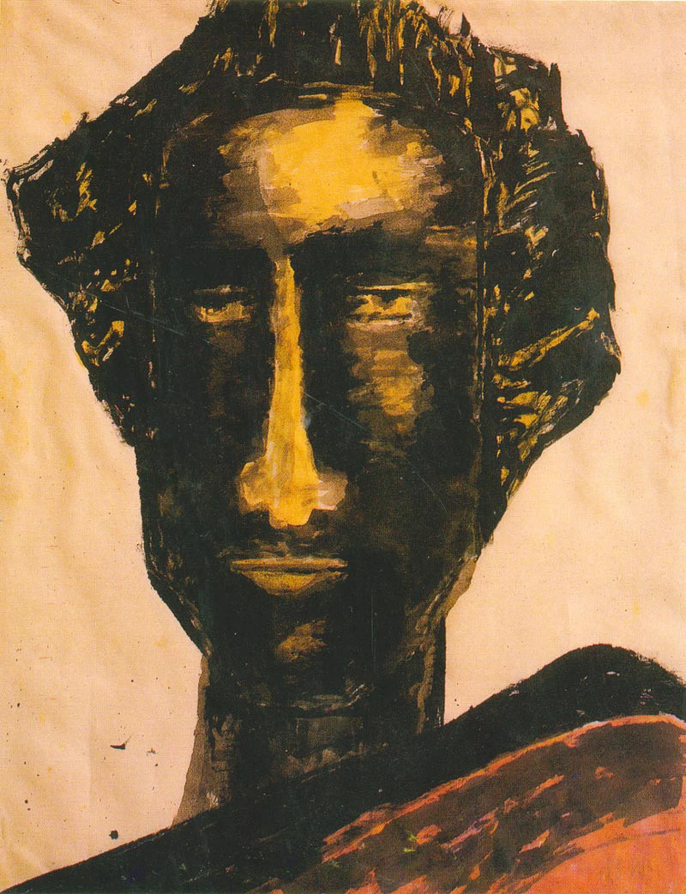
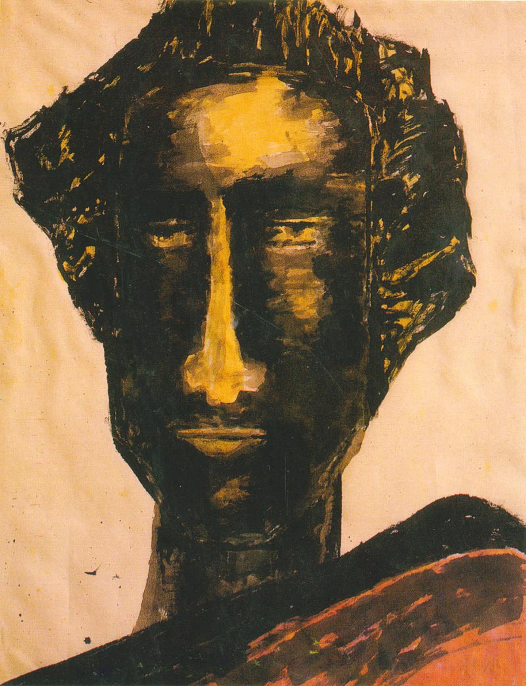

Rabindranath Thakur
1861 - 1941
The Bard of Bengal
Rabindranath Tagore was a renowned poet, philosopher, and writer who made significant contributions to Indian literature and culture. He was the first non-European to win the Nobel Prize in Literature in 1913 for his collection of poems, Gitanjali. Tagore was born on May 7, 1861, in Calcutta, India, into a prominent family of scholars and intellectuals. He was a prodigious child who started writing poetry at a young age and went on to become one of the most celebrated writers of his time. Tagore's works are characterized by their lyrical and evocative language, and his themes of love, nature, and spirituality resonate with readers to this day. He was a champion of Indian independence and used his writing to advocate for social and political change in India. Tagore was also a visionary who believed in the power of education and the arts to bring about social change. He founded the Vishwa Bharati University in Santiniketan, India, which emphasized the importance of learning through creative expression and celebrated India's cultural diversity. Tagore's legacy continues to inspire people around the world. His poems, stories, and essays continue to be read and celebrated for their timeless beauty and relevance. His contributions to Indian literature and culture have earned him a special place in the hearts of people not only in India but also across the world. In tribute to Rabindranath Tagore, we honor his remarkable life and contributions to literature, education, and social change. His work continues to inspire and guide us, and his vision of a more harmonious and inclusive world is one that we can all strive towards.
Biographies
- Rabindranath Tagore won the Nobel Prize in Literature in 1913, and he was the first Indian as well as Asian to win Nobel Prize. He wrote eight novels, four novellas and a wide collection of poetry.
- National Anthem of India was written by Rabindranath. The first time, the poem was sung on the second day of the annual session of the Indian National Congress in Calcutta on 27 December 1911. After independence, the first stanza of the poem was adopted as the National anthem. And, it became known as Jana Gana Mana.
- Tagore was also a prolific songwriter. He wrote approx. 2,230 songs in his whole life. And, Tagore is considered a major force in transforming the style of Bengali music by incorporating influences from different musical traditions.
- In 1940, he was awarded by Oxford University with a Doctorate of Literature in a special ceremony arranged at Shantiniketan.
- In 1915, British crowned Tagore with Knight Title. But after the Jallianwala Bagh incident, he refused to keep the title at 1919 to protest the terror.
- He painted over 3,000 paintings in the last 13 years of his life. It shows his creative power even his old age.
- Tagore introduced the short story genre to Bengali Literature. In 1877, he wrote a short story tilted Bhikharini. It was the first short story written in the Bengali language. The best known short story of Rabindranath was Kabuliwala.
- Apart from India's national anthem, Rabindranath also panned the national anthem of Bangladesh. In 1905, he wrote the song Amar Shonar Bangla during the British partitioning of Bengal, a time of national unrest. In 1971, when Bangladesh won its liberation war, the first ten lines of Amar Shonar Bangla were adopted as the National anthem in Bangladesh. Additionally, the national anthem of Sri Lanka was inspired by one of his works.
Photo Gallery
 
